I. Khái niệm cơ bản
0. Khái niệm Machine Learning
Một chương trình máy tính được cho là học từ kinh nghiệm E với tác vụ T và phép đo chất lượng P nào đó, nếu chất lượng của tác vụ T, được đo bởi P, cải thiện theo kinh nghiệm E. (Tom Mitchell, 1997)
1. Machine Learning và Deep Learning
- AI cho phép máy móc suy nghĩ mà không cần bất kỳ sự can thiệp nào của con người. Nó là một lĩnh vực rộng lớn của khoa học máy tính.
- Machine Learning là tính năng của AI, cho phép các chuyên gia đào tạo cho AI để nó nhận biết các mẫu dữ liệu và dự đoán.
- Deep Learning là kỷ thuật nhỏ của ML, cho phép máy có thể tự đào tạo chính mình, và các phép tính toán học phức tạp hơn.
2. Xác suất và thông kê trong Học Máy.
- Trong xác suất, chúng ta sẽ bắt đầu với model mô tả khả năng của sự kiện sẽ xảy ra. Sau đó dựa đoán khả năng xảy ra của sự kiện.
- Tóm lại có thể hiểu rằng là xây dựng 1 cái model dự đoán khả năng xảy ra trong tương lại dựa trên mô hình không có dữ liệu thực tế
- Trong thông kê thì tương phản với xác suất, thông kê chúng ta sẽ suy luận từ data hoặc mô hình dựa trên dữ liệu thực tế để quan sát.
- Xác suất là đi từ model sang data trong khi Thông kê là đi từ data sang model.
Mối quan hệ giữa xác suất và thông kê trong Học Máy.
(Nguồn: https://towardsdatascience.com/probability-vs-statistics-for-data-science-and-machine-learning-84f00bf67ce1)3. Học có giám sát và Học không có giám sát (Supervised Learning - Unsupervised Learning)
- Supervised là thuật toán dựa đoán đầu ra của 1 hoặc nhiều mới dựa vào cặp (đầu vào, đầu ra) đã biết trước. Một tập biến đầu vào X= {X¹,X²...Xn} và tập đầu ra tương ứng Y= {Y¹,Y²...Yn}
Ví dụ về học có giám sát
- Unsupervised là ngược lại với supervised chúng ta không biết kết quả đầu ra mà chỉ biết các vector đặc trưng đầu vào.
- Một cách toán học, Unsupervised learning là khi chúng ta chỉ có dữ liệu vào X mà không biết nhãn Y tương ứng.
- Giống như khi ta học, không có thầy cô giáo nào chỉ cho ta biết đó là chữ A hay chữ B. Cụm không giám sát được đặt tên theo nghĩa này.
Ví dụ về học không có giám sát
4. Supervised Learning: Regression,Classification,DNN
- - Cơ bản là đầu ra của bài toán chính là dữ liệu liên tục
- - Một thuật toán Regression có thể dự đoán giá trị rời rạc nhưng giá trị rời rạc với đại lương nguyên
- - VD: Một căn nhà rộng x và có y phòng ngủ và cách trung tâm thành phố z sẽ có giá là bao nhiêu ?
- - Kết quả đầu ra chính là dữ liệu rời rạc (nhãn hoặc xác suất nhãn)
- - Một thuật toán classification có thể dự đoán giá trị liên tục nhưng giá trị liên tục ở dạng xác suất đối với nhãn
- VD: Gmail xác định xem một email có phải là spam hay không; các hãng tín dụng xác định xem một khách hàng có khả năng thanh toán nợ hay không
- - Cơ bản có thể hiểu là mạng nơ-ron nông(Logistic Regression) được nâng cấp số lớp ẩn lên
- - DNN có thể thực hiện nhiệm vụ 2 bài toán classification và regression
- - Dự đoán Classification có thể đánh giá bằng độ chính xác (accuracy),...
- - Dự đoán Regression có thể đánh giá bằng root mean squared error hoặc các hàm chi phí khác
Regression (Hồi quy):
Classification
Deep neural network
Điều quan trọng là phép đáng giá của Regression và Classification
5. Unsupervised: Clustering,Auto Encoder Decoder, Luật Kết Hợp
Clustering:
Ví dụ về phân cụm (3 cụm)
Luật Kết Hợp:
Auto Encoder Decoder:
6. Clustering and Classification
- Clustering và Classification là 2 phương thức nhận dạng mẫu trong Học Máy. Mặc dù về cơ bản có thể nhận định khá là giống nhau tuy nhiên nó khác nhau trong thực tế.
- Classification là nó đi xác định các lớp cho trước và được gán nhãn sẵn và thuộc nhóm supervised learning.
- Clustering là nó xác định các điểm tương đồng giữa các đối tượng, nó sẽ nhóm theo các điểm tương đồng và khác với các nhóm kia và thuộc nhóm về unsupervised learning.

Ví dụ trực quan về classification và clustering
7. Học ngoại tuyến và Học trực tuyến
Học ngoại tuyến:
Học trực tuyến
8. Model based learning và Instance based learning
Instance-based learning
Ví dụ về Instance-based learning
Model-based learning
Ví dự về Model-based learning
9. Overfitting - Underfitting
Overfitting:
Underfitting:

Ví dụ trực quan về overfit và underfit.
10. Bias - Variance
Bias
Variance

Bias and Variance trade off
11. Các kỹ thuật tránh overfitting
- Regularization
- Thêm trọng số vào hàm mất mát
- Bạn có thể hiểu đơn giản Là kĩ thuật thêm tham số để giảm trọng số trong mô hình hoặc có thể hiểu là thêm yếu tố ràng buộc cho trọng số w. Có 2 tham số ta hay thêm vào đó là L1-norm và L2-norm, 2 tham số này đều được thêm vào và tính toán với hàm loss
- Công thức khi thêm l2-norm vào hàm loss: 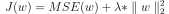
- Khi thêm l2-norm, sau quá trình traning thì các trọng số không quá lớn và tránh việc phụ thuộc vào 1 đặc trưng nào đó. Tham số lambda là tham số điều chỉnh mức độ tiêu chuẩn, lambda = 0 thì mô hình trở lại mô hình ban đầu, còn lambda khác 0 thì mô hình tiêu chuẩn.
- VD: Mô hình hồi quy tuyến tính khi thêm tham số tiêu chuẩn l2-norm thì thành mô hình hồi quy ridge
- Công thức khi thêm l1-norm vào hàm loss: 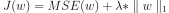
- Khi thêm l1-norm, sau quá trình traning thì các trọng số có xu hướng bằng 0, các trọng số bằng 0 thì tương đương với đặc trưng không quan trọng và cần loại bỏ, ngược lại thì các trọng số khác 0 thì tương ứng đặc trưng quan trọng ảnh hưởng tới kết quả đầu ra.
- VD: Mô hình hồi quy tuyến tính khi thêm tham số tiêu chuẩn l1-norm thì thành mô hình hồi quy lasso (Mô hình này thường được dùng lựa chọn đặc trưng) phần này mình có nói rõ chương 2
- Như chúng ta đã biết l1-norm thường ít ảnh hưởng với nhiêu hơn l2-norm, tuy nhiên, l1-norm hơi khó khăn với đạo hàm vì giá trị tuyệt đối không đạo hàm ở 0 làm cho việc tìm nghiệm lâu hơn
- Phần này, mình sẽ nói cụ thể ở chương 3 Hồi quy
- Early stopping
- Thông thường trong quá traning thì hàm chi phí luôn có xu hướng giảm theo số vòng lặp, nhưng chúng ta đã biết nếu mô hình bị overfit thì chi phí training thấp còn ở validation thì cao.
- Cơ bản có thể hiểu early stopping dừng trước khi hội tụ, nhưng đặt ra dừng khi nào ? nhưng bạn thấy ở hình vẽ chúng ta cần đặt ngưỡng nếu tập traning giảm nhưng tập validation có xu hướng tăng thì chúng ta dừng.
- Phương pháp này bạn có thể thấy nó không được hoàn hảo, nhưng nó vẫn cho kết quả tốt nhưng chưa thực sự tối ưu thôi. Với lại trong những bài toán đơn giản và thời gian traning ít bạn có thể dành thời gian quan sát nhưng ở những bài toán lớn thì bạn không quan sát rõ nên đây là phương pháp rất tốt dừng trước khi quá muộn.
- Validation
- Validation
- Khi bạn xây dựng một mô hình chi phí lỗi ở training và test đều rất nhỏ, mô hình xây dựng chỉ ở training và chúng chưa thể biết mô hình khái quát hóa thể nào trên tập test hoặc chất lượng trên tập test
- Vì vậy, thay vì chúng chia tập dữ liệu ban đầu 2 tập thì bây giờ chúng ta chia ra 3 tập: train/validation/test. Chúng ta sẽ trích 1 phần của traning để làm tập validation.
- Một VD trực quan: Giả sử các đề thi của các năm trước là training set, đề thi năm nay là test set mà ta chưa biết. Khi ôn tập, ta thường chia đề các năm trước ra hai phần: phần thứ nhất có thể xem lời giải và tài liệu để ôn tập, phần còn lại ta tự làm mà không sử dụng tài liệu để tự đánh giá kiến thức của mình. Lúc này, phần thứ nhất đóng vai trò là training set mới, trong khi phần thứ hai chính là validation set. Nếu kết quả bài làm trên phần thứ hai là khả quan, ta có thể tự tin hơn khi vào bài thi thật.
- Bây giờ chúng ta đã có 3 tập thì mỗi tập có nhiệm như sau: Tập traning sử dụng huấn luyện mô hình, tập validation sử dụng tối ưu mô hình và khái quát còn tập testing dùng để đánh giá mô hình nếu mô hình hoạt động tốt ở tập validation thì khả năng cao cũng hoạt động tốt ở tập test
- Cross-validation
- Trong nhiều trường hợp, chúng ta có rất hạn chế số lượng dữ liệu để xây dựng mô hình,chúng ta cần đặt câu hỏi chia tập dữ liệu thể nào cho phù hơp. Nếu lấy quá nhiều dữ liệu trong training set ra làm dữ liệu validation, phần dữ liệu còn lại của training set là không đủ để xây dựng mô hình. Lúc này, validation set phải thật nhỏ để giữ được lượng dữ liệu cho training đủ lớn. Tuy nhiên, một vấn đề khác nảy sinh. Khi validation set quá nhỏ, hiện tượng overfitting lại có thể xảy ra với training set còn lại.
- Vì vậy ra đời cross-validation là cải tiển của validation
- Cách thức làm việc của cross-validation đó là nó chia tập traning ra k tập con không giao nhau và kích thước bằng nhau. Tại mỗi vào traning thì một trong số k tập đó được lấy ra làm validation, và mô hình sẽ được huấn luyện trên k-1 tập còn lại , như vậy chúng ta có thể đánh giá một tập dữ nhiều mẫu k và lựa chọn chia sao tốt nhất
- Bằng cách lấy trung bình các lần kiểm định, ta sẽ có một thước đo chính xác hơn nhiều cho chất lượng của mô hình
- Nhược điểm: số lượng mô hình huấn luyện tỷ lệ thuận với k tập, trong thực tế ta xây dựng nhiều bài toán lớn thì lượng tham số xác định rất lớn, khoảng giá trị rộng hơn điều này làm cho mô hình khó khả thi
- Dropout
- Dropout thường được sử dụng trong các bài toán về mạng nơ-ron, công việc nó làm đó là loại ngẫu nhiên các đơn vị ra khỏi mạng nơ-ron, sẽ như vậy ở mỗi vòng lặp cứ thế ta sẽ làm với mạng nơ-ron nhỏ hơn, vậy nên sử dụng mạng nơ-ron nhỏ hơn như vậy giống tiêu chuẩn trong mạng nơ-ron
- Không kể chỉ ra nó tác động tương tự L2-norm mà Dropout còn có thể keep_prob khác ở mỗi lớp, dropout đầu vào phải gần với 1 vì chúng ta không muốn loại quá nhiều đặc trưng (Mình sẽ giải thích kỹ hơn ở phần neural network)
- Nếu sợ một số lớp bị quá khớp hơn mấy lớp khác ta có thể cho giá trị keep_prob thấp hơn vài lớp, nếu làm như vậy thì khó kiểm định chéo
- Data Augmentation
- Đơn giản là bạn muốn thêm dữ liệu vào mô hình để giảm bớt trình trạng overfit thì phương pháp này sẽ giúp bạn, cách thức thực hiện đó là bằng cách lấy trung bình các lần kiểm định, ta sẽ có một thước đo chính xác hơn nhiều cho chất lượng của mô hình
- Dữ liệu mới thu được thì ko được tốt như dữ liệu độc lập thực tế, cần dùng thêm kĩ thuật tiêu chuẩn
Code
def update_weights_l2_norm(X,y,w,step_size,num_iters,l2_penlaty): #Cập nhật trọng số khi thêm l2-norm vào
costs = []
for _ in range(num_iters):
y_pr = predict(X,w)
error = y_pr - y
for i in range(len(w)):
if i == 0: #Khi lambda = 0 thì bài toán trở bài linear regression
devivative = feature_devivative(X[:,i],w[i],l2_penlaty,error,True)
else: #Khi lambda != 0 thì toán trở thành linear ridge
devivative = feature_devivative(X[:,i],w[i],l2_penlaty,error,False)
w[i] = w[i] - step_size * devivative
cost = loss_function(X,y,w,l2_penlaty)
costs.append(cost)
return w,costs
def update_weights_l1_norm(feature_matrix, output, initial_weights, l1_penalty, tolerance):
m,n = feature_matrix.shape
weights = np.array(initial_weights.copy())
converged = False
while not converged:
change = []
for i in range(n):
old_weights_i = weights[i]
weights[i] = lasso_step(i,feature_matrix,output,weights,l1_penalty)
change_weight = abs(old_weights_i - weights[i])
change.append(change_weight)
if max(change) < tolerance:
converged = True
return weights
Minh họa về early stopping

Ảnh minh họa về cross-validation
from sklearn.model_selection import cross_val_score
def kford(model,X,y):
#K tập ở đây được chia thành 10 tập
cv = KFold(10, shuffle=True, random_state=0).get_n_splits(X.values)
scores = cross_val_score(
model, X, y,scoring="neg_mean_squared_error", cv=cv)
rmse_scores = np.sqrt(-scores)
print("Scores:", rmse_scores)
print("Mean:", rmse_scores.mean())
print("Standard deviation:", rmse_scores.std())

Hình ảnh minh họa về Dropout
12. Chia tập dữ liệu: Training set - Validation set - Test set
- Sau khi định nghĩa tập phát triển và tập kiểm tra, nhóm của bạn có thể thử nhiều ý tưởng khác nhau, ví dụ như các tham số khác nhau cho thuật toán học, để tìm ra ý tưởng tốt nhất. Tập phát triển và tập kiểm tra cho phép nhóm của bạn có thể đánh giá khả năng hoạt động của thuật toán một cách nhanh chóng.
- Nói cách khác, mục đích của tập phát triển và tập kiểm tra là hướng nhóm của bạn tới những thay đổi quan trọng nhất có thể làm để cải thiện trong hệ thống học máy.
- Lưu ý: Tập kiểm tra và tập phát triển này cần có cùng 1 phân phối
- Ta xây dựng một hệ thống dự đoán và hoạt động tốt trên tập phát triển tuy nhiên không hoạt động tốt trên tập kiểm tra. Nếu như tập phát triển và kiểm tra cùng phân phối thì chúng ta dễ dàng phát hiện ra vấn đề là quá khớp (overfit) cách xử lý thêm dữ liệu hoặc giảm mô hình,...
Tuy nhiên, nếu ta gặp trường hợp không cùng phân phối thì sẽ rất khó khăn.
- Thông thường chia tập dữ liệu là 60/20/20. Tuy nhiên tùy vào trường hợp chúng ta chia dữ liệu sao cho hợp lý.
Ví dụ về chia tập dữ liệu.
13. Gradient Descent
- Gradient Descent là một thuật toán tối ưu khái quát, có khả năng tìm nghiệm tối ưu cho cho rất nhiều dạng bài toán. Ý tưởng chung của Hạ Gradient là liên tục điều chỉnh các tham số để cực tiểu hoá một hàm chi phí.
- Giả sử ta đang bị lạc trên núi trong sương mù dày, và chỉ có thể cảm nhận được độ dốc của mặt đất dưới chân. Một chiến lược tối ưu để xuống chân núi nhanh chóng là đi xuống theo hướng dốc nhất đây chính là GD sẽ thực hiện. : nó tính gradient cục bộ của hàm chi phí theo vector tham số , rồi đi theo hướng ngược với
gradient đó. Khi gradient bằng 0 tức là ta đã tới một điểm cực tiểu!
- Cụ thể hơn, ta bắt đầu bằng việc gán các giá trị ngẫu nhiên cho (đây được gọi là khởi tạo ngẫu nhiên — random initialization). Sau đó các giá trị này dần được cải thiện bằng cách đi từng bước nhỏ, mỗi bước cố gắng làm giảm hàm
chi phí (như MSE), cho đến khi thuật toán hội tụ tại điểm cực tiểu.
Hình minh họa Gradient Descent
- Công thức tổng quát:
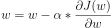
- Có một tham số rất quan trọng trong GD đó là learning rate (tốc độ học). Nếu learning rate quá lớn thì có thể tới điểm hội tụi nhanh tuy nhiên nó sẽ có thể vượt quá điểm tối ưu và có thể dừng ở điểm local còn learning rate quá nhỏ thì nó mất nhiều thời gian để nó tới điểm hội tụ

Hình minh họa learning rate trong GD
def update_weight(X,y,w,step_size,num_iters):
costs = [] #Lưu lại các chi phí
for _ in range(num_iters): #Lặp số vòng lặp chỉ định
y_pr = predict(X,w) #Đưa ra dự đoán
error = y_pr - y #Tính chí phí
for i in range(len(w)): #Lặp qua các trọng số
devivative = feature_derivative(error,X[:,i]) #Đạo hàm
w[i] = w[i] - step_size * devivative #áp dụng theo công thức cập nhật trọng số GD
cost = loss_function(X,y,w)
costs.append(cost)
return w,costs #Trả về trọng số đã được cập nhất và chi phí
- Hàm lồi: nghĩa là đoạn thẳng nối hai điểm bất kỳ trên đường cong không bao giờ cắt đường cong đó và hàm lồi là 1 hàm liên tục.
- Hàm lồi rất tuyệt vời trong GD vì việc đồ thị không có điểm cực tiểu mà chỉ có một giá trị nhỏ nhất vì vậy việc hội tụ sẽ nhanh hơn.
- Hàm MSE hay được sử dụng trong Regression là 1 hàm lồi.
- Tùy nhiên trong thực tế không phải hàm nào cũng là hàm lồi vì vậy cần tỉnh chỉnh phù hợp để tối ưu nhất con thể bằng cách tăng thời gian training hoặc nâng cấp thuật toán GD lên mometum hoặc RMSprop,...
- Tham khảo về hàm lồi
Hàm lồi và hàm không lồi
Các biến thể của Gradient Descent:
Cost vs Epochs (Source: https://www.bogotobogo.com/python/scikit-learn/scikit-learn_batch-gradient-descent-versus-stochastic-gradient-descent.php)
Cost vs Epochs (Cost vs Epochs in SGD (Source: https://adventuresinmachinelearning.com/stochastic-gradient-descent/)
14. Loss function
Các hàm tổn thất đóng một vai trò quan trọng trong bất kỳ mô hình thống kê nào - chúng xác định một mục tiêu mà hiệu suất của mô hình được đánh giá dựa trên và các tham số mà mô hình học được được xác định bằng cách giảm thiểu một hàm tổn thất đã chọn. Các hàm tổn thất xác định thế nào là một dự đoán tốt và không. Nói tóm lại, việc chọn đúng hàm tổn thất sẽ quyết định mức độ ổn định của công cụ ước tính của bạn.
Loss functions for regression
Hồi quy liên quan đến việc dự đoán một giá trị cụ thể có bản chất liên tục. Ước tính giá nhà hoặc dự đoán giá cổ phiếu là những ví dụ về hồi quy bởi vì người ta hướng tới việc xây dựng một mô hình dự đoán một số lượng có giá trị thực.
- Mean Squared Error (MSE)
- Công thức:

- Là một phép đo trung bình bình phương giữa giá trị dự đoán và giá trị thực tế. Nó chỉ quan tâm đến mức độ lỗi trung bình bất kể hướng của chúng
- Thêm vào đó MSE giúp tính toán gradient hiệu quả hơn
- Kết quả luôn dương, thêm vào đó khi mắc sai lầm thì thì hàm chi phí lỗi nặng hơn bởi bình phương
- Ưu điểm: MSE rất tốt trong việc đảm bảo model hoạt động tốt và không dự đoán outlier với chi phí lớn. Vì ta sẽ đặt trọng số lớn hơn vào các giá trị outlier để giảm chi phí xuống
- Nhược điểm: Nếu mô hình đưa ra 1 dự đoán rất tệ thì chi phí lỗi bình phương lên rất lớn, nó rất nhạy cảm outlier, tuy nhiên trong thực tế chúng ta không quan tâm mấy đến outlier mà hướng tới một mô hình toàn diện hoạt động đủ tốt với đa số
- Mean absolute error
- Công thức:
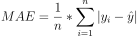 - Là 1 phép đo lường tổng độ lệch tuyệt đối giữa giá trị dự đoán và giá trị thực tế, cũng giống như MSE, nó đo độ lớn lớn không cần xem xét hướng
- MAE phức tạp hơn cần lập trình tuyến tính thì mới dễ dàng tìm được gradient, và MAE mạnh mẽ với các điểm outlier vì nó không bình phương.
- Ưu điểm: Chúng ta lấy giá trị tuyết đối, tất cả sai số sẽ được tính theo 1 thang đo tuyến tính, do đó không giống như MSE, không đặt quá nhiều trọng số vào outlier để giảm thang đó chung
- Nhược điểm: Nếu chúng ta quan tâm tới các giá trị outlier thì MAE sẽ không hiệu quả. Nhưng khi các điểm ngoại lai cực hiếm gặp (như trong đường cong hình chuông), độ đo RMSE lại tốt hơn và được sử dụng phổ biến hơn.
- So sánh MAE và MSE
- Để tìm điểm cực tiểu của một hàm số ta nghĩ ngay tới việc tìm đạo hàm số rồi mới đi tìm điểm mà tại đó có đạo hàm bằng 0. Như vậy sẽ có bước đạo thì MSE sẽ dễ dàng đạo hàm hơn MAE. Tuy nhiên MAE nó sẽ đưa hiệu quả tốt hơn khi trong tập dữ liệu có các điểm outlier.
- Trong MSE, chi phí lỗi bằng e, nếu e là chi phí lỗi cao thì lúc này e bình phương vô cùng lớn (e>1). Nếu bậc của e càng lớn thì giá trị hàm loss vô cùng lớn. Nếu như có điểm outlier trong tập dữ liệu, giá trị e vô cùng lớn, có thể tiến tới vô cùng.
- Trong MAE, chi phí lỗi bằng e, nếu e là chi phí lỗi cao thì e được lấy giá trị tuyết đối cũng lớn, tuy nhỏ sẽ nhỏ hơn nhiều khi e bình phương.
- Do đó khi tối ưu loss function, L2 phạt mạnh hơn với các điểm outlier và model sẽ bị kéo về phía outlier hơn. Do đó MSE bị ảnh hưởng bởi outlier và L1 tốt hơn đối với các dữ liệu có outlier.
- Tiêu chí xây dựng hàm loss fucntion là không âm và loss càng nhỏ thì model càng tốt với dữ liêu. Từ đầu đến giờ có lẽ các bạn vẫn thắc mắc tại sao trong các hàm loss chỉ dùng trị tuyệt đối, bậc 2, thế bậc 2n thì sao? Câu trả lời là bạn chọn bậc càng cao thì càng bị ảnh hưởng bởi outlier
def MSE(yHat, y):
return np.sum((yHat - y)**2) / y.size
def MAE(yHat, y):
return np.sum(np.absolute(yHat - y)) / y.size
Loss functions for classification
Các vấn đề phân loại liên quan đến việc dự đoán kết quả đầu ra của lớp rời rạc. Nó liên quan đến việc phân chia tập dữ liệu thành các lớp khác nhau và duy nhất dựa trên các tham số khác nhau để một bản ghi mới và chưa thấy có thể được đưa vào một trong các lớp. VD: Thư có thể được phân loại là thư rác hoặc không phải thư rác. Chúng ta hãy xem xét các hàm mất mát có thể được sử dụng cho các bài toán phân loại.
- Binary Cross Entropy Loss
- Là hàm chi phí hay được sử dụng trong vấn đề phân loại nhị phân, Entropy là thước đo ngẫu nhiên trong thông tin đang được xử lý, và entropy chéo là thước đo sự khác biệt của độ ngẫu nhiên giữa 2 biến ngẫu nhiên
- Nó so sánh từng xác suất được dự đoán với kết quả đầu ra thực tế của lớp có thể là 1 hoặc 0, Sau đó, nó tính toán điểm phạt các xác suất dựa trên khoảng cách so với giá trị kỳ vọng. Điều này, có nghĩa là gần hay xa giá trị thực tế
- Công thức:
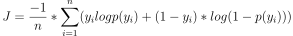 - Categorical cross entropy loss
- Hàm phân loại chéo là một hàm mất mát được sử dụng trong các nhiệm vụ phân loại nhiều lớp. Đây là những nhiệm vụ trong đó ví dụ chỉ có thể thuộc về một trong số nhiều danh mục có thể có và mô hình phải quyết định loại nào.
- Công thức:
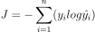
def CrossEntropy(yHat, y):
if y == 1:
return -log(yHat)
else:
return -log(1 - yHat)
15. Các phương thức đánh giá hiệu suất mô hình.
* Regression
Để đánh giá hiệu suất của mô hình hồi quy chúng ta không đưa ra độ chính của mô hình mà chúng ta cần tính toán chi phí lỗi giữa giá trị thực tế và giá trị dự đoán
- Các hàm mất mát hồi quy kể trên câu số 14
- Như chúng ta đã biết, để đánh giá 1 bài toán hồi quy hoạt động có tốt hay không thì chúng ta sẽ dựa vào tính toán chi phí lỗi giữa dự đoán và thực tế, chi phí nhỏ thì càng thể hiện rằng mô hình hồi quy đang hoạt động 1 cách tốt
- Tuy nhiên, chi phí lỗi này chúng ta cần đánh giá khách quan trên các tập dữ liệu mình đang chia trước đó
- Root Mean squared error
- Root mean squared error căn bản chính là căn bậc 2 MSE. Đó có lẽ là thống kê dễ giải thích nhất, vì nó có cùng đơn vị với đại lượng được vẽ trên trục tung.
- RMSE có thể hiểu là độ lệch chuẩn phần dư, phần dư là khoảng cách từ điểm dữ liệu tới đường hồi quy
- Khi đánh giá mức độ phù hợp của một mô hình với tập dữ liệu, chúng tôi sử dụng RMSE thường xuyên hơn vì nó được đo bằng các đơn vị giống như biến phản hồi.
- Công thức:
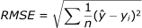 - R2-score
- Là 1 thước đo thống kê thể hiện mức độ phù hợp của 1 mô hình hồi quy. Gía trị lý tưởng là 1 và giá trị càng 1 thì mô hình càng tốt
- R2 là phép so sánh giữa tổng phần dư của các bình phương (SSres) với tổng bình phương (SStot).
- SStot được tính toán bằng tổng bình phương của khoảng cách vuông góc giữa các điểm dữ liệu và đường trung bình
- SSres được tính bằng tổng bình phương của khoảng cách vuông góc giữa các điểm dữ liệu và đường thẳng vừa vặn nhất
- Công thức tổng quát:
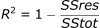


* Classification
Để đánh giá của mô hình phân loại thì chúng ta có rất nhiều phương thức để đánh giá
- Ma trận nhầm lẫn
- nó là một phép đo hiệu suất cho vấn đề phân loại học máy trong đó đầu ra có thể là hai hoặc nhiều lớp. Đó là một bảng với 4 sự kết hợp khác nhau của các giá trị dự đoán và thực tế.
- Chúng ta sẽ tìm hiểu các thuật ngữ TP,FP,TN,FN
- TP: là bạn dự đoán dương tính và thực tế đúng - Bạn dự đoán người nữ đó mang thai - sự thật là đúng người đó có mạng thai
- FP: là bạn dự đoán dương tính và thực tế là sai - Bạn dự đoán người nam đó mạng thai - sự thật là không mang thai
- TN: là bạn dự đoán âm tính và thực tế là đúng - Bạn dự đoán người nam đó không mang thai - sự thật là người đó không mang thai
- FN: là bạn dự đoán âm tính và thực tế là sai - Bạn dự đoán người nữ đó không mang thai - sự thật người đó có mạng thai
- Từ bảng ma trận nhầm lẫn này ta dễ dàng đánh giá các lớp mình đang phân loại như thế nào và điều chỉnh lại sao cho phù hợp. Còn trong trường hợp nhiều lớp thì nó cũng tính toán như vậy nhưng tính toán TP,TN,FP,FN hơi dài dòng một chút, vấn đề này mình sẽ cập nhật sau
- Độ chính xác
- Độ chính xác chính là nó lượng có bao nhiêu quan sát, cả tích cực và tiêu cực đã được phân loại chính xác
- Precision
- Từ bảng ma trận nhầm lẫn chúng ta tính toán precision, và chúng ta có thể hơn đơn giản là từ các lớp mình dự đoán là dương tính thì có bao nhiêu là lớp dương tính thực sự (How many ?)
- Precision càng lớn thì độ chính xác của điểm cần tìm càng cao, mục tiêu lý tưởng là precision là 1
- Tính toán Precision được tính như sau:
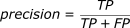 - Recall
- Recall có thể hiểu đơn giản là từ tất cả lớp dương tính thì model dự đoán đúng được bao nhiêu (How many ?)
- Recall càng cao thì tỷ lệ bỏ sót càng ít, mục tiêu lý tưởng là recall là 1
- Tính toán Recall được tính như sau:
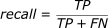 - F1-Score
- Trong mỗi model sau khi xây dựng xong thì chúng ta đều muốn đạt được 1 kết quả tốt, precision và recall đều đạt được mục tiêu lý tưởng, tuy nhiên trong thực tế vấn đề hơi khó giải quyết vì vậy mới ra đời F1-score để dung hòa 2 cái này lại
- F-score giúp đo lường độ chính xác và độ chính xác cùng một lúc. Nó sử dụng Harmonic Mean thay cho Arithmetic Mean bằng cách trừng phạt các giá trị cực đoan nhiều hơn.
- Công thức: 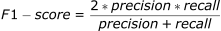
- ROC-AUC
- Đường cong ROC-AUC là phép đo hiệu suất cho các vấn đề phân loại ở các ngưỡng cài đặt khác nhau. ROC là đường cong xác suất và AUC là diện tích dưới đường cong và là đại diện cho mức độ phân tách
- AUC cho biết mô hình có khả năng phân tách như thế nào. AUC càng cao thì mức độ phân tách càng tốt
- Để vẽ được đường cong ROC: nó dựa vào 2 trục đó TPR và FPR
- Một số ví dụ về ngưỡng:
Ma trận nhầm lẫn (Image courtesy: My Photoshopped Collection)
Ma trận nhầm lẫn (Image courtesy: My Photoshopped Collection)

AUC = 1
AUC = 1 Đây là một tình huống lý tưởng. Khi hai đường cong không trùng nhau có nghĩa là mô hình có một thước đo lý tưởng về khả năng phân tách. Nó hoàn toàn có thể phân biệt giữa lớp tích cực và lớp tiêu cực.

AUC = 0.7
Khi hai bản phân phối chồng lên nhau, chúng tôi đưa ra lỗi loại 1 và loại 2. Tùy thuộc vào ngưỡng, chúng tôi có thể giảm thiểu hoặc tối đa hóa chúng. Khi AUC là 0,7, có nghĩa là có 70% cơ hội để mô hình có thể phân biệt giữa lớp tích cực và lớp tiêu cực.

AUC = 0.5
Đây là tình huống tồi tệ nhất. Khi AUC xấp xỉ 0,5, mô hình không có khả năng phân biệt để phân biệt giữa lớp tích cực và lớp tiêu cực.

AUC = 0
Khi AUC gần bằng 0, mô hình thực sự đang chuyển động qua lại các lớp. Nó có nghĩa là mô hình đang dự đoán một lớp tiêu cực là một lớp tích cực và ngược lại.
Tham khảo bài viết ROC-AUC rất hay